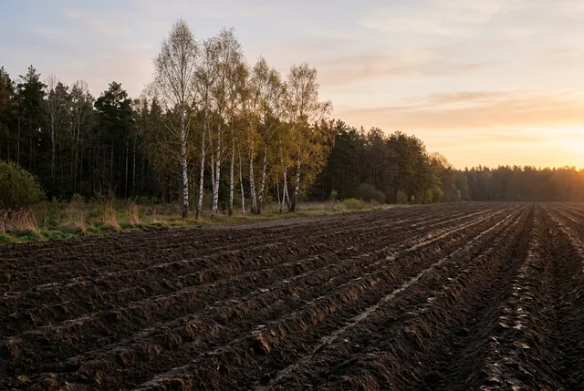
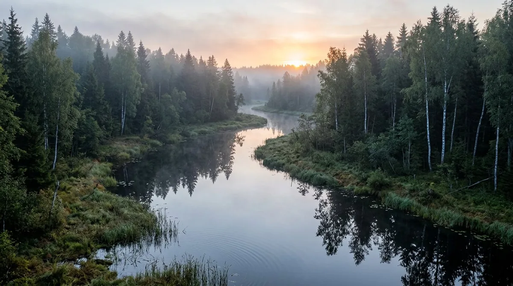
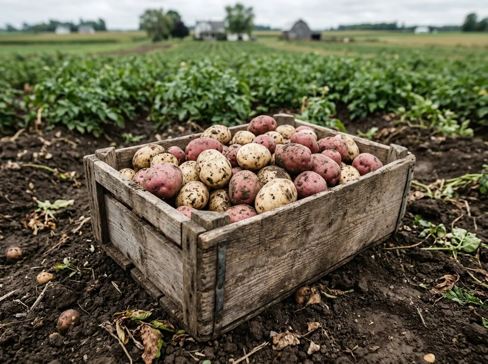
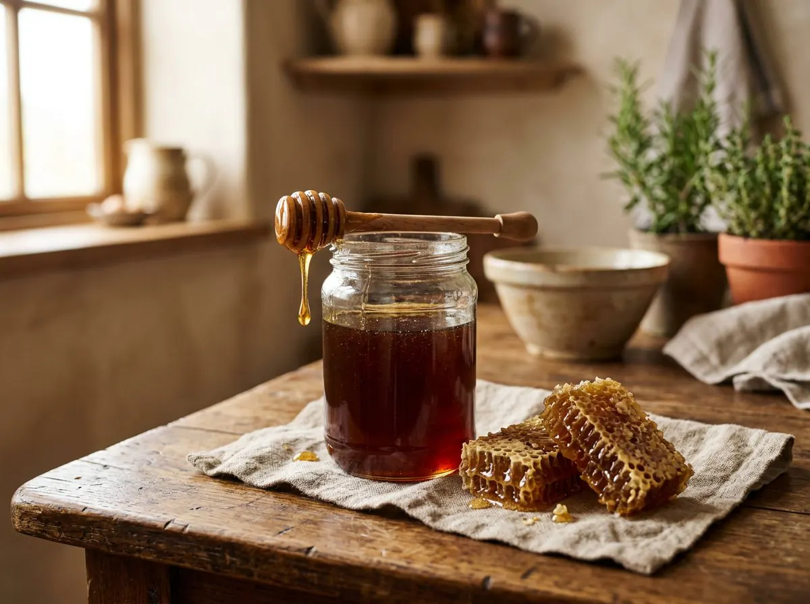
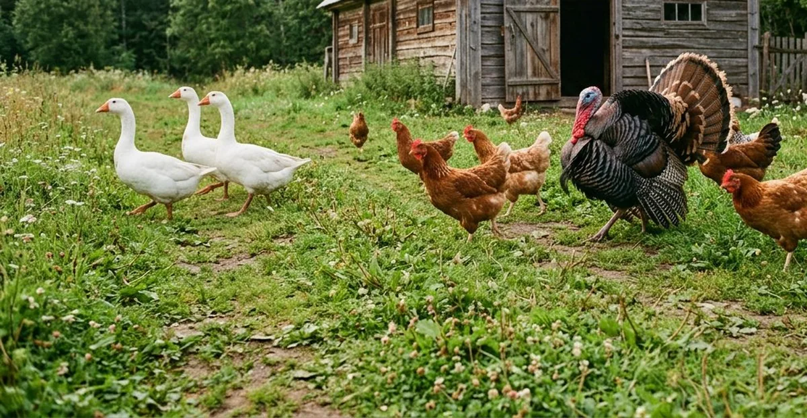
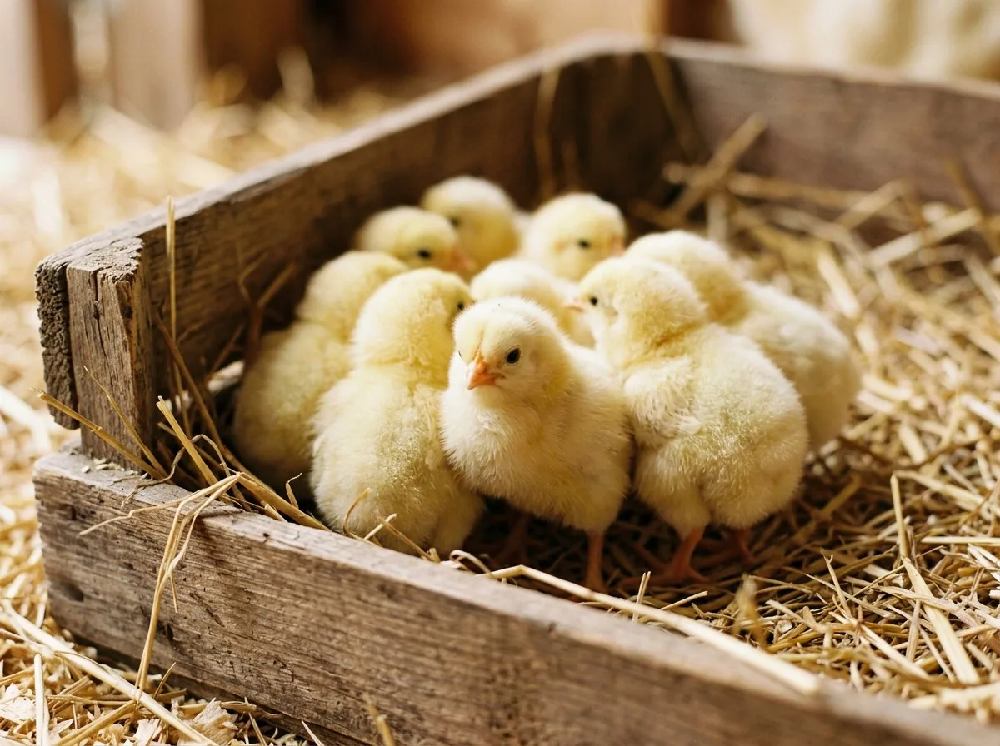

01 / Экология
Экологически чистые продукты
Вокруг — леса, озёра и поля. Ни производств, ни промышленного земледелия с «достижениями химической промышленности».
Верховья Волги
Ферма «Рунская» · Тверская область
Едим сами и кормим наших детей тем, что выращиваем: картофель с целины, мёд со своей пасеки, яйцо и мясо птицы — на зерне и траве.
Наши преимущества
Хозяйство среди лесов Тверской области: своя земля, своя птица, своя пасека — и никакой «химии» на полях.
Вокруг — леса, озёра и поля. Ни производств, ни промышленного земледелия с «достижениями химической промышленности».
Верховья ВолгиСвои семена и селекция, свой инкубатор, своя пасека. Качество начинается с земли и корма — и мы держим его под контролем.
От семени до продуктаЭто главный критерий: на нашем столе — то же, что мы предлагаем вам.
Проверено на себеПокупатели отмечают качество нашей продукции — и рекомендуют нас.
Первые покупатели — с 2022 года
О ферме «Рунская»
В наш век технологий и высокомолекулярных продуктов питания, которые никак не добавляют здоровья нам и нашим детям, мы организовали натуральное фермерское хозяйство: выращиваем овощи, разводим птиц, качаем натуральный мёд и питаемся со своего подворья.
Выбор пал на эти места не случайно: здесь нет никаких производств и развитого сельского хозяйства с передовыми достижениями химической промышленности.
Вся продукция выращивается исключительно натуральным способом — с применением агротехнологий 20-х годов XX века. Мы уже собрали картофель с целинных земель без удобрений, накачали первую партию ароматного мёда со своей пасеки и впервые вырастили кур мясных и яичных пород. У нас есть индюки и гуси.
Как мы растим
Мы не вносим удобрения на целинных землях, не кормим птицу комбикормами и ничего «не добавляем». Всё — по старым проверенным агротехнологиям 20-х годов XX века.
Подробнее о нашем методеКартофель растёт на целинных землях без удобрений и пестицидов.
Натуральные методы земледелия столетней давности — вместо достижений химической промышленности.
Птица питается исключительно зерном и травой: без комбикормов, пищевых добавок, стимуляторов роста и антибиотиков.
Весь путь от закладки яиц в инкубатор до взрослой птицы проходит внутри хозяйства. Сейчас мы замыкаем цикл: получаем собственные инкубационные яйца.
Ведём селекцию растений и получаем собственные семена, а ещё отбираем оптимальные породы птицы.
Мёд качаем со своей пасеки. Пчёлы — породы «Карника».
Продукция
Из-за расширения производства у нас появляются излишки — и мы с радостью делимся ими с вами.

ОвощиДва сорта: белый «Успех» и красный «Рэд леди». Выращен на целинных землях без удобрений и пестицидов — особо ценный продукт в наше время.

ПасекаКачаем мёд со своей пасеки, пчёлы — породы «Карника». Мёд урожая 2022 года — тёмного цвета, с очень ароматным букетом. Первые покупатели получили его по предзаказам.

ПтицаКуры, индюки и гуси на зерне и траве — без комбикормов, пищевых добавок и антибиотиков.
Яйцо от кур яичных пород — Ломан браун и Доминант 959. Птица выращена на зерновых смесях, без пищевых добавок и стимуляторов роста.

МолоднякРеализуем суточных и подрощенных птенцов. Наличие и породы уточняйте.
Хроника хозяйства
Записи из жизни хозяйства — сезон 2022 года: от инкубатора и посевной до первого мёда и картофеля.
Первая закладка в инкубатор яиц от кур, выращенных в нашем хозяйстве, и старт продаж столового яйца.
В этом году у нас два сорта картофеля, выращенного на целине без удобрений и пестицидов.
Мёд этого года тёмного цвета и с очень ароматным букетом. Первые покупатели уже получили его по предзаказам.
Первые продажи мяса птицы и молодого картофеля. Покупатели отметили качество продукции.
Журнал фермы
Практические статьи — как хранить, выбирать и готовить натуральные продукты.
Практические правила хранения картофеля: лечебный период, прохлада, темнота, сухая кожура и правильная тара. Как сохранить клубни до весны без потерь.
Аромат, вязкость и кристаллизация — естественные признаки натурального мёда. Почему тёмный мёд не хуже светлого и как его узнать при покупке.
Тест с водой, осмотр белка и просвечивание — три простых способа понять, насколько свежее яйцо, не выходя из кухни.
Ломан браун и Доминант 959 — для яйца, Кобб 700 и Росс 308 — для мяса, индюки Биг 6 и гуси Линда. Рассказываем про поголовье нашей фермы.
Что такое целина и почему почва, не знавшая удобрений и пестицидов, даёт плотный и вкусный клубень. Как мы работаем на таких землях.
Севооборот, ручной труд, собственные семена и никакой «химии»: как на нашей ферме работают агротехнологии 20-х годов XX века.
Вопросы и ответы
Не нашли ответ? Напишите нам — мы отвечаем на все вопросы по телефону и электронной почте.
Задать вопросВ Тверской области, в посёлке Рунский Пеновского округа — среди лесов, там, где берёт начало Волга. Адрес: Лесная улица, 4а. Условия визита и получения заказа уточняйте по телефону или через форму на сайте.
Интернет-магазин пока в разработке. Оставьте заявку через форму на этой странице, позвоните или напишите на электронную почту — мы ответим на вопросы и подскажем, что есть в наличии.
Нет. Картофель выращен на целинных землях без удобрений и пестицидов, а вся продукция — натуральным способом, по агротехнологиям 20-х годов XX века.
Зерном и травой. Без комбикормов, пищевых добавок, стимуляторов роста и антибиотиков.
Кур яичных и мясных пород, индюков и гусей. В хозяйстве: Ломан браун, Доминант 959, бройлеры Кобб 700 и Росс 308, Голошейка, Супер Харко, индюки Биг 6 и гуси Линда.
Да, мы реализуем суточных и подрощенных птенцов. Наличие и породы уточняйте заранее.
Мёд с собственной пасеки; пчёлы породы «Карника». Мёд урожая 2022 года — тёмного цвета, с очень ароматным букетом. Продаём в том числе по предзаказам.
Контакты
Оставьте заявку — мы свяжемся с вами. Интернет-магазин пока в разработке, поэтому заказы и вопросы принимаем напрямую.
Тверская область, Пеновский муниципальный округ,
пос. Рунский, Лесная улица, 4а
В разработке — заказы и вопросы принимаем напрямую.